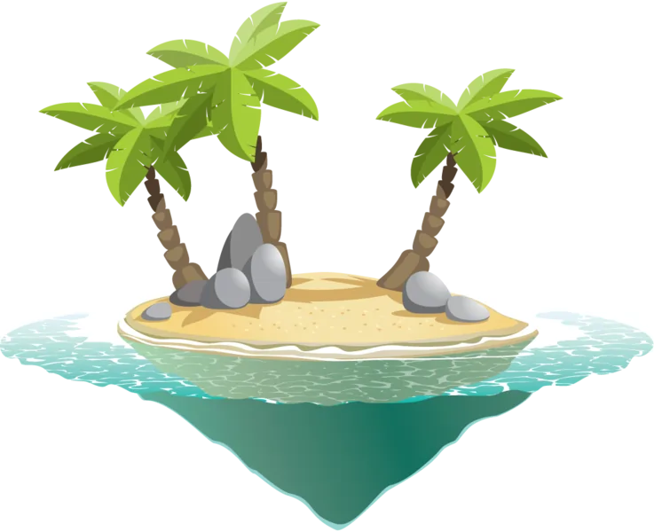
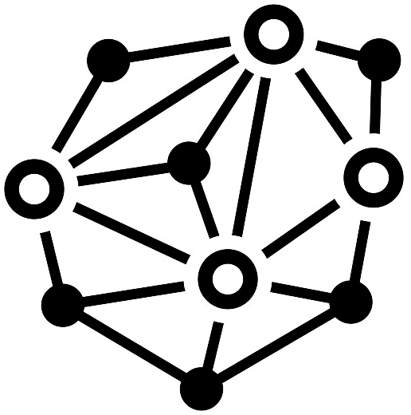
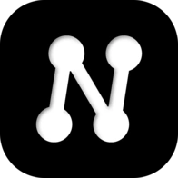

прозрачный фонРазведка показала: «белыми» картинки были потому, что белым был фон приложения. На деле их четыре класса: цветные с прозрачным фоном (остров), цветные на белом фоне (самолёт, больница), чёрный рисунок на белом фоне (сеть в финале — после инверсии становится белым-на-чёрном, в паре с логотипом) и чёрная плашка логотипа. В светлой теме всё остаётся ровно как в 1.x — вопрос только про тёмную. Страница свёрстана на настоящих токенах тёмной темы 2.0.
Как было в 1.x — и как останется в светлой «Бумаге».

прозрачный фон
чёрный рисунок
логотипКаждая иллюстрация стоит на белой подложке со скруглением и тенью — как светлые скриншоты в тёмных доках GitHub/Notion. Плюс: ни одна картинка не требует обработки, всё выглядит ровно как в 1.x. Минус: «окна света» в тёмной странице.
Цветные с прозрачностью ложатся прямо на тёмный фон; белофонные получают скругление и лёгкое приглушение; чёрный рисунок инвертируется в светлый; логотип — тонкая кайма, чтобы плашка не сливалась. Плюс: темнее и «роднее» всего, ни одного светового пятна. Минус: у белофонных белый фон всё же остаётся (приглушённым).
Все картинки на полупрозрачной панели тёмной темы (как виджеты приложения); белофонные приглушены сильнее, рисунок сети инвертирован. Плюс: иллюстрации выглядят «виджетами» продукта, единый ритм со страницей. Минус: вокруг прозрачных картинок появляется рамка, которой в 1.x не было.
Единый фильтр затемнения на все картинки без подложек: белые фоны становятся серыми. Плюс: одно правило, ноль разбора по классам (сети всё равно нужна инверсия — универсального фильтра для чёрного рисунка не существует). Минус: белофонные выглядят «серыми экранами», цвета глушатся.